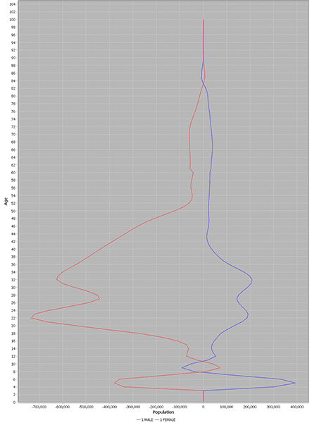
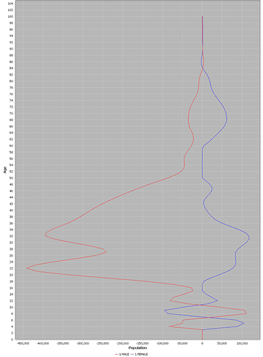

С.П. Обогуев
Смертность и рождаемость
населения СССР и РСФСР в 1941-1945 годах
Согласно подсчётам специалистов Росстата, демографические потери
СССР в Великой отечественной войне составили непосредственно за
период 1941-1945 гг. 39.3 млн. чел., слагаясь из:
- сверхсмертности в возрастных группах старше 4 лет объёмом в
25.5 млн. чел.
- прироста детской смертности в возрасте 0-4 лет в 1.3 млн. чел.
- и подавления рождаемости объемом в 12.5 млн. чел.
- эмиграция не включена в эти потери и составляет дополнительные
0.6 млн. чел. прилагаемые уже после начала 1946 года
Чистая убыль населения, не считая эмиграцию, составила 12.7%.
Эти величины сверхсмертности и дефицита рождений исчислены
разностным образом между фактическим населением на начало 1946 года
(по реконструкции отправляющейся от переписи 1959 года) и
гипотетическим населением на начало 1946 года в контрфактической
ситуации, при которой показатели рождаемости и смертности 1940 года
оставались бы неизмеными на протяжении 1941-1945 годов.
Общие демографические потери населения на территории отдельно РСФСР
(а не всего СССР) по расчётам Росстата за 1941-1945 гг. составили
19.8 млн. чел, а уменьшение численности населения в границах
РСФСР середины 1941 года (до вхождения Тувы) – 13.6 млн. чел.
Благодаря присоединению Тувы численность населения РСФСР чуть
возросла, и общее уменьшение численности населения РСФСР составило
13.4 млн. чел. Из-за того, что миграция в РСФСР из других районов
СССР продолжалась во время войны, чистая убыль населения РСФСР
оказалась чуть меньше, чем в среднем по СССР – 12.3%. Неизвестность
точных величин миграции делает невозможным жёсткое определение
размера людских потерь населения РСФСР методом демографического
баланса.
Федеральная служба государственной
статистики, "Великая отечественная война : юбилейный
статистический сборник", М. 2015, стр. 24, 32;
Федеральная служба государственной статистики, "Великая
отечественная война : юбилейный статистический сборник", М.
2020, стр. 26-27;
Е.М.Андреев, Л.Е.Дарский, Т.Л. Харькова, "Население Советского
Союза : 1922-1991", РАН, научный совет "Проблемы демографии и
трудовых ресурсов", М. : Наука, 1993, стр. 75-77 [далее –
АДХ-СССР];
Е.М.Андреев, Л.Е.Дарский, Т.Л. Харькова, "Демографическая
история России : 1927-1959", НИИ статистики Госкомстата России,
Отделение демографии, М. 1998, стр. 139-140 [далее – АДХ-РСФСР];
Е. Андреев, Л. Дарский, Т. Харькова, "Оценка людских потерь в
период Великой Отечественной войны" // Вестник Статистики, 1990
№10, стр. 25-27.
О методике расчёта людских потерь (методом демографического
баланса, при котором сопоставляются реальная численность и
структура населения в начале и конце войны) см. В.А. ###Исупов,
"Демографические катастрофы и кризисы в России в первой половине
XX века : Историко-демографические очерки", Институт истории СО
РАН, Новосибирск, 2000, стр. 185-186.
О других оценках см. "Демографическая модернизация России,
1900–2000" (ред. А. Вишневский), М. : Новое издательство, 2006,
стр. 439-441 и Исупов, стр. 184-185, 195. Примечательно, что
русский социолог Н.С. Тимашев ещё в 1948 г. выводил оценки
демографических потерь СССР в войне (общие потери: 37.5 млн.
чел, включая прямые людские потери 26.6 [в т.ч. эмиграция 1.3
млн. чел.] и дефицит рождений 10.9 млн. чел.) близкие к тем,
которые были получены позднесоветскими и послесоветскими
исследователями более 40 лет спустя (N.S. Timasheff, "The
postwar population of the Soviet Union" // The American Journal
of Sociology, 1948, т. 54 № 2 (сентябрь 1948), стр. 155).
Приведённые числа описывают суммарные избыточные демографические
потери СССР за указанный период от всех причин – как непосредственно
от войны, так и от советских политик по отношению к населению во
время неё.
Располагая этими оценками общих потерь за пятилетие, мы однако не
имеем хотя бы самой примерной оценки погодовых показателей
рождаемости и смертности населения СССР и РСФСР за 1941-1945 годы в
виде промилле. Этот пробел, не позволяющий построить непрерывный
погодовой историко-демографический ряд показателей движения
населения за длительный период (как то, за 1896-2024 гг.), мы и
попытаемся восполнить.
При том, что общие объёмы потерь более или менее известны, задача
состоит в установлении разбивки различных категорий потерь по
времени и определении движения внутри периода 1941-1945. Имеющие
реконструкции населения доходят с одной стороны до середины 1941
года (двигаясь к нему от 1920-х гг. и переписей 1937 и 1939 гг.), а
с другой строны до конца 1945 года (двигаясь к нему обратным
отсчётом от переписи 1959 года), но промежуток между серединой 1941
года и концом 1945 года остаётся "чёрным ящиком" – к которому мы
здесь попытаемся приложить увеличительное стекло.
Отсутствие множества элементов данных за 1941-1945 годы заведомо не
позволяет провести для этого периода реконструкцию погодового
движения населения с высокой точностью, поэтому речь пойдёт об
определении величин движения лишь в самом примерном виде,
позволяющем произвести стыковку между началом/cерединой 1941 и
концом 1945 года, при чём распределение уровней рождаемости и
смертности на отдельные годы и полугодия пятилетия обладало хотя бы
некоторой общей степенью правдоподобия и соотнесения с
действительностью. Для этого нам придётся сделать известное число
правдоподобных, но примерных и произвольных предположений о временно́м распределении смертей –
предположений, замещающих нехватку прямых сведений.
* * *
Для целей нашего расчёта, речь пойдёт только о непосредственных
потерях за 4 года войны относительно непосредственно
предвоенного же уровня рождаемости и смертности. Однако война
имела последствия простирающиеся не только на многие десятилетия
после неё, но и наступившие уже прежде неё. Рождаемость в
СССР и РСФСР в 1940 году резко сократилась, при этом в РСФСР первые
признаки сокращения проявились уже в 1939 году.
АДХ отмечают это обстоятельство, не комментируя его специально
(АДХ-СССР, стр. 120, АДХ-РСФСР, стр. 164):
|
рождаемость
|
год
|
СССР |
РСФСР |
| промилле |
% от
1937 |
промилле |
% от
1937 |
| 1937 |
39.9 |
100.0 |
41.5 |
100.0 |
| 1938 |
39.0 |
97.7 |
40.9 |
98.6 |
| 1939 |
40.0 |
100.3 |
39.8 |
95.9 |
| 1940 |
36.1 |
90.5 |
34.6 |
83.4 |
Расчёт Бирабена также показывает резко уменьшившееся в 1940 число
рождений:
| год |
число
рождений
на территории
СССР-1975
|
| тыс. |
% от
1937 |
| 1937 |
7,150 |
100.0 |
| 1938 |
7,070 |
98.9 |
| 1939 |
7,015 |
98.1 |
| 1940 |
6,095 |
85.2 |
J.-N. Biraben, "Naissances et
répartition par âge dans l’Empire russe et en Union Soviétique"
// Population, т. 31 (1976), №2, стр. 455.
А. Коул, Б. Андерсон и Э. Харм в капитальном труде о динамике
рождаемости в России тоже отмечают резкое падение брачной
плодовитости в 1939-1940 годах:
| год |
брачная
плодовитость
населения
европейской части России
|
в
нормировке
на гуттеритскую
плодовитость
|
% от
1937 |
| 1937 |
0.542 |
100.0 |
| 1938 |
0.521 |
96.1 |
| 1939 |
0.505 |
93.2 |
| 1940 |
0.430 |
79.3 |
A. Coale, B. Anderson, E. Härm, "Human
Fertility in Russia Since the Nineteenth Century", Princeton
University Press, 1979, стр. 16.
Снижение отчасти обусловлено долгосрочным фактором: в детородный
возраст 20-25 вступили ослабленные войнами когорты 1915-1920 гг.
рождения. Однако долгосрочные факторы, проявляющиеся постепенно,
могут быть ответственны лишь за малую часть столь крутого и
внезапного снижения. Коул и Андерсон указывают на основную причину
обвала:
«Брачная плодовитость в европейской части России резко
упала с 1939 по 1940 год. Почти треть общего изменения
плодовитости с 1925-1927 гг. приходится на один этот год. Может
показаться, что это падение отражает начало влияния Второй мировой
войны на русскую рождаемость, однако значительные военные потери и
разрушительное влияние немецкого вторжения и оккупации начались не
раньше середины 1941 года, а их основные последствия проявились –
из-за задержки между зачатием и рождением – в 1942 году и позже.
Сокращение рождаемости в 1940 году подразумевает сокращение числа
зачатий произошедшее главным образом в 1939 году. В этом году
советская армия вторглась в Польшу, а также участвовала в первых
сражениях войны в Финляндии. Можно заключить, что обстоятельства
этих военных действий – мобилизация войск, нарушение жизни
приграничных областей переселением населения на вновь
присоединённые территории, и насильственное переселение поляков и
белорусов-католиков – явились причиной особенно резкого падения
рождаемости с 1939 по 1940 год». (Coale и др., стр. 18-19)
В этом перечислении причин обвала рождаемости Коул с соавторами
упускают резкое снижение уровня жизни подсоветского населения в 1939
и 1940 годах из-за подготовки к большой войне (мыслившейся тогда
советским руководством не как оборонительная, а как "освободительный
от капитализма" поход РККА в страны центральной и западной Европы).
В 1939-1940 гг. продовольственное снабжение в городах центральной
России упало почти что до будущих норм блокадного Ленинграда ###,
при этом принудительная трудовая нагрузка и трудоизъятие возросли.
В.Ю. Рылов, "За и против. Власть и
общество в Воронежской области в начале второй мировой войны
(1939-1941)", Воронеж : Издательский дом ВГУ, 2018, стр. 90-91,
94, 151-152, 171-172, 244-251;
Д. Дьяков, "На свою голову : Воронеж и 1939 год : Документальное
повествование", Воронеж : Издательский дом ВГУ, 2016, стр. 35;
Д. Дьяков, "Прыжок в бездну : как Воронеж вступил во Вторую
мировую войну" // Воронежский курьер, 19 января 2010, стр. 4.
Одновременно с падением рождаемости пошла на повышение младенческая
смертность (АДХ-СССР, стр. 135, АДХ-РСФСР, стр. 164):
| год |
младенческая
смертность
(промилле) |
| СССР |
РСФСР |
| 1938 |
174 |
209 |
| 1939 |
168 |
213 |
| 1940 |
184 |
216 |
Общая смертность населения в СССР между 1939 и 1940 гг. выросла с
20.1 до 21.7 промилле (на 8%), естественный прирост населения
снизился с 20.0 до 14.4 промилле, или в 1.4 раза (АДХ-СССР, стр.
120). Чистый коэффициент воспроизводства населения РСФСР в 1940 году
упал на 14% (в 1.16 раз) сравнительно с 1938 годом (АДХ-РСФСР, стр.
164).
Декомпозиция возрастной численности населения СССР и РСФСР в 1959
году (итогов переписи 15 января 1959 года) показывает, что наиболее
глубокий четырёхлетний по ширине провал в числе рождений разверзся не
9 или более месяцев спустя после начала войны, т.е. после
начальных мобилизаций плюс срок беременностей, как инстинктивно
можно было ожидать на первый взгляд, а много ранее, за 8 или более
месяцев до того провала рождаемости, который был бы вызван только
войной 1941-1945 годов. Наиболее глубокий 4-летний по ширине провал
зачатий настал не после войны, а с ноября 1940 года или ранее.
Осуществившийся провал является итогом наложения двух военных волн:
войны 1941-1945 гг. и предшествующих войн 1939-1940 гг., а также
подготовки к войне 1941 года в 1939-1940 годах.
Опубликованные итоги переписи 1959 года
приводят возрастной состав населения с разбивкой только по
пятилетиям возраста, а половозрастной состав – по десятилетиям
(ЦСУ СССР, "Итоги Всесоюзной переписи населения 1959 года :
РСФСР", М. : Госстатиздат, 1963, стр. 59-61, 102-103; то же и
для населения СССР в сводном томе, стр. 50-72), однако
хранящаяся ныне в РГАЭ разработка переписи (ф.1562 оп. 336
д.1590-1594) содержит разбивку по отдельным годам возраста.
Погодовая возрастная разбивка опубликована на Демоскопе:
https://demoscope.ru/weekly/ssp/sng_mar_59.php?reg=1&gor=3&Submit=OK;
https://www.demoscope.ru/weekly/ssp/sng_edu_59.php?reg=2;
https://www.demoscope.ru/weekly/ssp/rus_mar_59.php;
https://www.demoscope.ru/weekly/ssp/rus_edu_59.php
Её обработка (программой
rtss.ww2losses.BirthTrough) показывает, что наиболее
глубокий 4-летний по ширине минимум числа рождений в годы около
1941-1945 наступает с полного возраста 16.92 лет (СССР) или
16.98 лет (РСФСР) на дату проведения переписи (15 января 1959
года), что соответствует рождениям в период 17.2.1941 – 17.2.1942 (СССР) или
26.1.1941 – 26.1.1942 (РСФСР), и
сответственно зачатиям в период 23.5.1940 – 23.5.1941 (СССР) или
1.5.1940 – 1.5.1941 (РСФСР), со средними датами промежутков
зачатий соответственно 22.11.1940 (СССР) и 31.10.1940 (РСФСР).
Таким образом, разностный расчёт потерь войны основанный на отсчёте
дефицита рождений в 1941-1945 гг. сопоставительно с уровнем
рождаемости 1940 года является сущностно заниженным, т.к. военные
потери уже отчасти факторизованы в спад рождаемости 1940 года.
Избрание в качестве опорной точки 1940 года, отражающего "норму"
сформированную демоцидальными политиками советского строя до 1941
года, подразумевает расчёт дальнейшего демографического ущерба
относительно точки отсчёта этой уже демоцидальной "нормы". Однако
это не влияет на нашу цель исчисления абсолютных значений
показателей рождаемости и смертности для 1941-1945 гг.
* * *
Мы проводим раздельный расчёт для каждой из
двух территорий (СССР и РСФСР), но выполняемый по общей схеме.
Прежде чем погрузиться в подробности, обрисуем эту схему в общих
чертах.
- Построить таблицу половозрастных коэффициентов смертности
для 1940 года.
- Установить половозрастную структуру населения на середину
1941 года и на конец 1945 года (= начало 1946 года).
- Построить прогноз населения при гипотетическом условии
сохранения мира в 1941-1945 годах. Прогноз строится в виде
оценки половозрастной структуры населения для временны́х
точек между серединой 1941 и концом 1945 года, с полугодовым
шагом. Для начала и конца каждого полугодия мы исчисляем
прогноз двух структур:
- Населения c нормальными рождениями, в предположении
сохранения в 1941-1945 гг. уровня рождаемости 1940 года.
- Только наличного на середину 1941 года населения при
сохранении мирного уровня смертности, но без рождаемости.
Этот прогноз позволяет нам исчислять для каждого полугодия
ожидаемое число смертей только в уже наличном на середину
1941 населении.
- При построении прогноза мы принимаем в учёт влияние
оказанное в 1942-1945 гг. сульфаниламидными препаратами и
антибиотиками на резкое снижение младенческой и раннедетской
смертности.
- Разница между прогнозом (2) на начало 1946 года и
фактической половозрастной структурой на начало 1946 года
указывает половозрастную структуру демографического дефицита
накопленного к концу 1945 года в наличном на начало войны
населении, за период с середины 1941 по конец 1945 года.
- Если бы используемая для расчёта половозрастная
структура начала 1946 года не обнимала эмиграцию второй
волны, то для определения половозрастной структуры
сверхсмертности накопленной к концу 1945 года в наличном
на начало войны населении следовало бы вычесть эмиграцию
из демографического дефицита (избыточные смерти = дефицит
– эмиграция). Однако поскольку используемая нами
половозростная структура на начало 1946 года (по
реконструкции АДХ) ещё содержит будущих эмигрантов
(реконструкция АДХ исключает их лишь начиная с 1947 года),
то накопленная сверхсмертность совпадает с дефицитом.
- Эта начальная оценка накопленной сверхсмертности,
исходящая из демографического дефицита на конец войны, не
равна числу избыточных смертей, а ниже его. Чтобы понять,
почему это так, представим условно, для пояснительного
примера, что в период 1941-1945 гг. люди гибли только в
1942 году, а в остальные годы (1943-1945) смертность
сохраняла обычное мирное значение. В таком случае мы
первоначально отнесли бы весь установленный на конец 1945
года дефицит к 1942 году как избыточное число смертей в
этом году. Однако количество людей к началу 1943 года и в
последующие годы снизилось бы сравнительно со случаем
мирного 1942 года (из-за добавочного числа смертей), и
поэтому даже при неизменном сохранении мирного уровня
смертности в 1943-1945 гг. снизилось бы также число
смертей в этих годах. Если бы мы взяли дефицит населения
измеренный на конец 1945 года, наивно отнесли его как
избыточное число смертей в 1942 году и пересчитали
демографическую динамику с 1941 по 1945 год с учётом этой
добавки смертей, то получили бы на конец 1945 года меньший
дефицит, чем наблюдался в действительности. Избыточные
смерти в 1942 году ведут к снижению населения на конец
1942 года и сооветственно пропорциональному снижению числа
"нормальных" смертей (по мирному уровню смертности) в
1943-1945 гг. Введение относительного избытка
смертей в 1942 году порождает их относительный недостаток
в 1943-1945 гг., частично уравновешивающий избыток 1942
года и ведущий к суммарному дефициту населения на конец
1945 года меньшему, чем избыток смертей в 1942 году. Это
означает, что фактически произошедшее в 1942 году число
смертей больше, чем величина дефицита населения на конец
1945 года. Чтобы получить известную величину дефицита
населения в конце 1945 года, следует приложить к 1942 году
избыточное число смертей не равное дефициту на конец 1945
года, а большее. Если действительное число избыточных
смертей в 1942 году обозначить как ИС42,
дефицит в конце 1945 года как Д45, а долю людей
умирающих на протяжении 1943-1945 гг. (сравнительно с
населением на начало 1943 года) как β, то ИС42
= Д45 / (1 – β).
- Дополнительно, разница между фактической половозрастной
структурой начала 1946 года и прогнозом (1) на начало 1946
года, изолированная для возрастов 0 – 4.5 лет, укажет
накопленный дефицит населения рождённого во время войны.
- Используя половозрастную структуру сверхсмертности на
конец 1945 года и ряд предположений о временно́м
распределении различных категорий сверхсмертности по
полугодиям, мы устанавливаем половозрастную структуру
накопленной с начала войны сверхсмертности начального
населения (наличного в середине 1941 года) для каждой из
промежуточных полугодовых точек с середины 1941 по конец
1945 года. Для этого мы обратным от конца 1945 года отсчётом
распределяем категории избыточной смертности по полугодиям
(в виде половозрастной структуры для накопленной на начало
полугодия сверхсмертности), с полугодовым обратным шагом по
времени. При каждом шаге мы также сдвигаем струкутуру
остатка накопленной сверхсмертности на полгода вниз по
возрасту. Разница половозрастных структур накопленной
сверхсмертности для временны́х точек начал соседних
полугодий даёт начальную оценку для числа и структуры
избыточных смертей в данном полугодии. Эта начальная
структура должна ещё корректироваться, как описано ниже.
- Мы затем рекомбинируем распределение сверхсмертности по
####
- В совокупности с прогнозом населения (2) это даёт нам для
каждой из промежуточных полугодовых точек оценку
половозрастной структуры остатка (в этой точке) наличного на
середину 1941 года населения.
- Что позволяет нам определить возрастную структуру женщин
фертильного возраста для начала и для конца каждого
полугодия, а также среднюю за полугодие структуру
детородного женского населения. Отсюда мы вычисляем число
фактических рождений в данном полугодии, используя
возрастные коэффциенты плодовитости данного года по
анамнестическому опросу 1960 года.
- Применяя таблицы смертности мирного времени, мы
определяем, какое число из фактически родившихся с середины
1941 по конец 1945 года дожили бы до конца 1945 года, если
бы младенческая и раннедетская смертность в это время имела
величину мирного времени. Сравнение результата с фактически
наличным количеством детей в возрастах 0 – 4.5 лет на конец
1945 года устанавливает объём избыточных смертей родившихся
во время войны по причине повышения младенческой и
раннедетской смертности из-за военных условий.
- Опираясь на сведения о динамике младенческой смертности в
годы войны, мы распределяем это общее количество избыточных
смертей родившихся во время войны по полугодиям.
- Таким образом мы получаем для каждого полугодия:
- Половозрастную структуру (и численность) населения на
начало и на конец полугодия и, следовательно, среднюю за
полугодие численность населения.
- Ожидаемое в условиях мира количество смертей в
полугодии.
- Избыточное количество (и половозрастную структуру)
смертей накопленных на начало и на конец полугодия в
наличном на середину 1941 года населении и, следовательно,
избыточное количество смертей в этом населении за текущее
полугодие.
- Избыточное количество смертей среди родившихся за время
войны и избыточно умерших в данном полугодии.
- Что в сумме указывает общее фактическое число смертей в
полугодии.
- Фактическое число рождений в полугодии.
- С учётом средней за полугодие численности населения, две
последние величины указывают рождаемость и смертность (в
промилле) для данного полугодия.
- Сведения о полугодиях комбинируются в сведения о годах, и
величины рождаемости и смертности (в промилле) исчисляются
также для календарных лет.
- Дополнительно, мы определяем число несостоявшихся
рождений.
Перейдём к расчётам.
* * *
Прежде всего, установим численность и половозрастную структуру
населения на середину 1941 года, т.е на момент начала войны.
Мы можем вычислить её двумя способами (программный код
содержит оба варианта, переключаемых установкой useADH).
Первый вариант основан на передвижке от переписи 1939 года, с
предварительным внесением в результаты оной необходимых поправок
для очистки от фальсификаций.
Второй вариант – на передвижке от численности и половозрастной
структуры населения расчитанной Андреевым, Дарским и Харьковой
(далее – АДХ) на начало 1941 года. (АДХ приводят результаты
расчёта сгруппированными по 5-летним возрастным группам; мы
распаковываем их в погодовые величины посредством сплайна
сохраняющего суммарные значения для 5-летних групп). Мы применяем
этот вариант в качестве основного, для лучшего разностного
согласования с данными о населении на 1 января 1946, имеющимися
только по исчислению АДХ.
Для передвижки от начала до середины 1941 года используется та же
таблица смертности, что и вычисляемая для 1940 года.
Таблица смертности на 1940 год для СССР:
АДХ не опубликовали вычисленные и использованные ими
для СССР возрастные показатели смертности, в т.ч. для 1940
года. Насколько можно судить, для взрослых возрастов они
полагали их близкими по распределению (т.е. общей форме кривой,
но не точным значениям) к госкомстатовской таблице смертности
для 1938-1939 гг. ("Таблицы смертности и ожидаемой
продолжительности жизни населения", М. : Государственный
комитет СССР по статистике, 1989, стр. 33-50):
"Расчет возрастных чисел умерших проводился в
несколько этапов путем передвижки населения 1939 г. с
использованием модифицированных таблиц смертности 1938-1939
гг., так, чтобы при данных числах живущих в каждом возрасте
они давали заданное общее число умерших... При модификации
таблиц смертности 1938-1939 гг. мы воспользовались
независимыми оценками уровня младенческой смертности,
рассчитанными нами по данным о младенческой смертности на
территориях с хорошей регистрацией". (АДХ-СССР, стр. 54-55).
Для 1940 г. этот уровень младенческой смертности (q0) полагается
равным 184.0 промилле (АДХ-СССР, стр. 135) против 163.5 по ГКС
для 1938-1939.
Общий уровень смертности населения в 1940 году возрос
сравнительно с 1938 годом (по АДХ, с 20.9 до 21.7 промилле) при
одновременном снижении уровня рождаемости (с 39.0 до 36.1
промилле), что означает ещё более высокий прирост возрастных
коэфициентов смертности, чем подразумевается одним лишь
возрастанием уровня смертности, т.к. число смертей
распределилось из-за падения рождаемости на сравнительно меньшее
население подверженное смертности (exposed population), чем было
бы при прежнем уровне рождаемости. При возрастных коэффициентах
смертности существовавших в 1930-1940-х гг. значительная доля
смертей приходилось на новорожденное в текущем году население.
Сокращение числа рождений при одновременном повышении общего
числа смертей в населении означает, что число смертей во
взрослом населении выросло сильнее, чем указывается одним только
ростом общей смертности.
Соответственно этому, мы строим таблицу возрастных коэффициентов
смертности для 1940 года отправляясь от госкомстатовской таблицы
1938-1939 гг. и видоизменяя её следующим образом:
- Младенческая смертность (q0 для взвешенного среднего обоих
полов) повышается до 184 промилле, пропорциональные
повышения делаются также в таблицах для отдельных полов.
- Смертность в возрастах 1-5 лет повышается на множитель
линейно спадающий с возрастом от величины 184.0/163.5 в
возрасте 1 год до 1.0 в возрасте 5 лет.
- Возрастные коэффциенты смертности в возрастах 5-100 лет
повышаются на одинаковый множитель, при котором полученная
таблица даёт годовую смертность в 21.7 промилле при
рождаемости 36.1 промилле (с учётом смертности рождённых в
текущем году). Этот множитель исчислим как 1.438.
Таблица смертности на 1940 год для РСФСР:
Основана на возрастных коэффициентах смертности РСФСР
для 1940 года расчитаннных АДХ (АДХ-РСФСР, стр. 167-170). Для
получения требуемой смертности при данной рождаемости, нам
приходится слегка повысить возрастные коэффициенты смертности
(для всех возрастов равномерно) на множитель 1.007 сравнительно
с расчитанными АДХ. Различие может быть обусловлено
расхождениями вызванными дезагрегацией значений возрастных
коэффициентов смертности и половозрастной структуры населения
(см. ниже).
Возрастные коэффициенты смертности РСФСР-1940 расчитаннные АДХ
приводятся в АДХ-РСФСР, стр. 167-170, но только агрегировано для
возрастных групп (0 лет, 1-4 года, далее для пятилетних групп и
затем для группы 85-100 лет). Мы распаковываем их в годовые
величины посредством метода PCLM (Rizzi, "Efficient Estimation of
Smooth Distributions From Coarsely Grouped Data", 2015),
предварительно внося некоторые исправления:
Данные АДХ для возрастных коэффициентов смертности
часто содержат слишком низкую смертность в группе 85-100
сравнительно с группой 80-84. Это видно по ходу кривой закона
Хелигмана-Полларда (с коэффицентами подобранными под данные АДХ)
в двух последних диапазонах (80-84-100), а также по завороту
кривой PCLM в тех же диапазонах. Вместо ожидаемого ускоряющегося
роста смертности с возрастом, строимые по данным АДХ кривые
показывают в старших возрастах неизменный или замедляющийся рост
смертности.
Кроме того, для некоторых лет (РСФСР 1927-1933, 1937, 1946-1948)
рассчитанная АДХ мужская смертность в возрастной группе 85-100
вообще ниже, чем в группе 80-84. Это не только представляется
невозможным фактически, но и вызывает резкий перегиб и
немонотонное поведение строимой кривой смертности в этом
возрастном диапазоне. Для некоторых других лет смертность в
группе 85-100 хотя и не ниже, чем для группы 80-84, но едва-едва
выше её, что также малореалистично и также вызывает резкий изгиб
кривой смертности на горизонталь, вместо её плавного
подъёма.
Мы корректируем исчисленные АДХ значения смертности в этих двух
группах таким образом, чтобы общее число смертей в них осталось
неизменным, при данной половозрастной структуре населения. Мы
понижаем значение смертности в возрасте 80-84 и повышаем её для
возраста 85-100 так, чтобы смертность в группе 85-100 была выше,
чем в группе 80-84, однако суммарное число смертей в возрастах
80-100 оставалось неизменным. Мы также пытаемся исправить
значения смертности для групп 80-84 и 85-100 таким образом,
чтобы шло плавное последовательное нарастание сравнительно с
группой 75-79.
Половозрастная структура населения принимается нами по АДХ
(АДХ-СССР, стр. 125-126; АДХ-РСФСР, стр. 157-160), однако АДХ
приводят значения агрегированные по возрастным 5-летним группам (а
также группе 85-100 лет). Мы распаковываем их в погодовые значения
посредством итеративного сплайна сохраняющего сводные значения для
групп агрегации.
Дезагрегация неизбежно вносит отклонения сравнительно с
до-агрегированными значениями, однако исходные до-агрегированные
значения возрастной структуры населения и возрастных коэффициентов
смертности по расчётам АДХ, к сожалению, недоступны. (Хотя все
расчеты АДХ для СССР и для России выполнялись с шагом 1 год по
времени и по возрасту, однако рабочие материалы расчетов АДХ по
СССР не сохранились. Показатели же по России существуют, однако
авторы твердо решили не публиковать ничего сверх ранее
опубликованного).
* * *
Установив половозрастную структуру населения на середину 1941 года и
таблицу смертности для 1940 года, мы затем строим прогноз населения
до начала 1946 года, с полугодовым шагом.
Разбив временной промежуток с середины 1941 по начало 1946 года на
полугодовые отрезки, мы делаем последовательную пошаговую передвижку
населения от начальной точки (середины 1941) по конечную точку
(начало 1946) по таблице смертности мирного времени (соответствующей
взрослой смертности 1940 года и прогрессивно падающей из-за введения
антибиотиков детской смертности, см. ниже) и уровню рождаемости 1940
года, исчисляя прогноз динамики населения в 1941-1945 гг. в
контрфактическом случае отсуствия войны, с шагом по полгода.
Результат этих исчислений будет затем использован нами как базис для
разностной калькуляции военных потерь, посредством сравнения
прогноза населения с фактическим населением в начале 1946 года по
реконструкции АДХ (вычисленной обратным отсчётом от переписи 1959
года).
Всего в интервале с середины 1941 по начало 1946 года имеются 9
полугодовых отрезков передвижки, общей длительностью 4.5 года. Для
каждой из промежуточных точек (начала и середины 1942, 1943, 1944 и
1945 годов) мы вычисляем прогноз численности и половозрастной
структуры ожидаемого населения в контрфактическом случае отсутствия
войны, т.е. в случае сохранения мирных условий отражаемых таблицей
смертности 1940 года (с дополнительными поправками на антибиотики) и
уровнем рождаемости 1940 года.
- Передвижка выполняется в двух вариантах:
- с учётом рождений после середины 1941 года (по общему уровню
рождаемости равному рождаемости в 1940 году, т.е. CBR =
CBR_1940);
- и без учёта новых рождений после середины 1941 (CBR = 0).
Первый вариант отслеживает суммарное население –
наличное на середину 1941 года плюс рождённое после середины 1941
года – каковым оно было бы в гипотетических условяих мира.
Второй вариант отслеживает движение только наличного на середину
1941 года населения (без добавляемых рождений периода после
середины 1941 года).
Разница между вариантами даёт ожидаемое новорожденное после
середины 1941 года население, выжившее с рождения и до текущего
момента (т.е. за вычетом унесённого младенческой и раннедетской
смертностью).
Напомним ещё раз, что передвижка делается для контрфактического
случая отсутствия войны и устанавливает ожидаемую динамику
населения в условиях мира в 1941-1945 годах. Относительно этой
ожидаемой в условиях мира динамики мы затем будем разностным
образом исчислять потери принесённые военным временем.
При передвижке мы, в частности, записываем для каждого полугодия
ожидаемое в условиях мира число смертей на протяжении этого
полугодия в начальном (наличном на середину 1941 года, без учёта
добавочных после этого рождений) населении.
- Для 1941 года мы применяем ту же таблицу смертности, что была
исчислена для 1940 года.
- После начала применения в 1940-х гг. сульфаниламидных
препаратов (стрептоцида и сульфидина) и антибиотиков,
младенческая и раннедетская смертность выказала первые признаки
снижения в конце 1942 года, а затем резко снижалась в 1943-1946
годах (Сифман; Андреев, 2014, стр. 101). Естественно ожидать,
что при отстутствии войны произошли бы те же медицинские
улучшения, возможно проявившиеся бы даже сильнее и чуть ранее,
поэтому их необходимо учесть при прогнозе ожидаемого в невоенном
случае состава и численности населения на период 1943-1945
годов. Мы располагаем для этого следующими сведениями:
- Сифман (стр. 54) приводит численные сведения о падении
смертности в отдельные месяцы первого года жизни (для всех
12 первых месяцев после рождения) в 1943, 1944 и 1945 годах
относительно 1940 года, отдельно для городского и отдельно
для сельского населения РСФСР. Она, к сожалению, не сообщает
суммарных показателей за весь год жизни, а также показателей
для совокупного (городского и сельского вместе) населения
страны, а также сведений для населения СССР (а не РСФСР).
Важно, что сила снижения смертности (относительно величин
1940 года) повышается от первых месяцев жизни к старшим
месяцам первого года. Падение значительно для всех месяцев
первого года жизни, но в старших месяцах проявляется ещё
сильнее, чем в ранних месяцах. Можно поэтому предполагать,
что снижение раннедетской смертности распространялось также
и на возрасты 1-4, однако мы не располгаем сведениями о
величине этого снижения в возрастах старше первого года
жизни.
- По оценкам АДХ, младенческая смертность в РСФСР снизилась
между 1940 и 1946 с 216 до 124 промилле (АДХ-РСФСР, стр.
140, 164-165),
а в СССР со 184 до 167 (АДХ-СССР, стр. 69, 71, 135).
- По позднейшей оценке Андрева, младенческая смертность в
РСФСР за 1940-1946 годы снизилась с 205 до 94 промилле
(Андреев, 2014, стр. 92-95);
почти те же величины приводит Кваша (2003, стр. 49).
- Фильцер (2018, стр. 215, 325-326, 330-340; 2010, стр. 259,
271-277, 283-293, 328-333) приводит следующую динамику
младенческой смертности в основных тыловых районах РСФСР:
188 (в 1939), 214 (в 1940), 196 (в 1941), 314 (в 1942), 159
(в 1943), 112 (в 1944); для тыловых промышленных
районов РСФСР: 85 (в 1945), 81 (в 1946). Источник сведений в
монографии Фильцера – архивные материалы ЦСУ СССР и
Статистического Управления РСФСР о механическом движении
населения за 1939-1955 гг.
Р.И. Сифман, "К вопросу о причинах снижения
детской смертности в годы Великой Отечественной войны" //
"Продолжительность жизни: анализ и моделирование", ред. Е.М.
Андреев и А.Г. Вишневский, М.: Статистика, 1979, стр. 50-60.
Р.Х. Зулкарнеев, Ш.З. Загидуллин, Н.А. Власова,
"Сульфидинотерапия пневмонии в годы Великой Отечественной
войны 1941–1945 гг." // Пульмонология, 2017, 27 (3), стр.
427–430.
Е.А. Кваша, "Младенческая смертность
в России в XX веке" // "Социологические исследования", 2003
№6, стр. 47-55.
А. Авдеев, "Младенческая
смертность и история охраны материнства и детства в России
и СССР" // ред. М. Денисенко и др., "Историческая
демография : Сборник статей", М. 2008 ("Демографические
исследования", Вып. 14) стр. 13-72.
Е.М. Андреев, "Снижение младенческой
смертности в России в 1940-1958 гг." // "Развитие
населения и демографическая политика. Памяти А.Я. Кваши.
Сборник статей" (ред.М.Б. Денисенко, В.В. Елизарова), М.:
МАКС Пресс, 2014. стр. 92-111.
Д. Фильцер, "Опасности городской жизни в СССР
в период позднего сталинизма. Здоровье, гигиена и условия
жизни. 1943-1953", М., Политическая энциклопедия, 2018,
первоизд. Donald Filtzer, "The Hazards of Urban Life in Late
Stalinist Russia : Health, hygiene, and living standards,
1943-1953", Cambridge University Press, 2010.
| год |
младенческая
смертность
в РСФСР
и тыловых районах РСФСР |
| промилле |
относительно
1940 года |
| 1939 |
188 |
0.88 |
| 1940 |
214 |
1.00 |
| 1941 |
196 |
0.92 |
| 1942 |
314 |
1.47 |
| 1943 |
159 |
0.74 |
| 1944 |
112 |
0.52 |
| 1945 |
85 |
0.40 |
| 1946 |
81 |
0.38 |
Мы моделируем снижение младенческой и раннедетской смертности
из-за фармацевтических улучшений 1942-1945 гг. пересчётом для
каждого года (1942-1945) таблицы смертности для гипотетических
мирных условий. Вместо того, чтобы прилагать для 1941-1945 гг.
немодифицированную таблицу смертности 1940 года, мы
пересчитываем для каждого года (1942-1945) таблицу смертности,
отправляясь от начальной таблицы 1940 года и понижая в ней
коэфициент младенческой смертности (q0) на множитель вытекающий
из данных Фильцера. Для 1941-1945 годов мы принимаем этот
множитель равным соответственно (1.0, 0.90, 0.70, 0.45, 0.40), с
добавочной интерполяцией на полугодия. Избранные нами значения
множителя чуть ниже, чем непосредственно следующие из сведений
Фильцера, т.к. приводимая Фильцером фактическая младенческая
смертность в 1942-1945 гг. отражает также влияние военных
условий, и в условиях мира в 1941-1945 гг. показатели
младенческой смертности в 1942-1945 гг. были бы ниже приведённых
фактических, и соответственно падение младенческой смертности
было бы более крутым. Хотя мы неспособны прогнозировать величины
младенческой смертности в условиях мира, мы всё же можем
приложить минимальную скромную поправку, пытающуюся хотя бы
частично очистить ожидаемые значения КМС от влияния военных
тягот.
Поскольку меры вызывающие снижение младенческой смертности
понижают также и раннедетскую смертность, как на это указывают
наблюдения Сифман, мы дополнительно снижаем коэфциенты
смертности также и в возрастах 1-4 года с постепенным линейным
уменьшением снижения по возрасту, так что оно исчезает в
возрасте 5 лет. (Возможно, что правильным было бы применить
более агрессивное снижение смертности в возрастах 1-4 лет, или
хотя бы в возрасте 1 года, к чему подталиквают сведения Сифман,
но к сожалению мы не располагаем данными о величине падения
раннедетской смертности в обсуждаемые годы, поэтому избрали
консервативный вариант оценки её изменения).
* * *
Различие между половозрастной структурой населения на 1 января 1946
года ожидаемой по передвижке и фактической наличной структурой
указывает объём и структуру демографического дефицита
накопленного за период с начала войны на конец 1945 года.
Фактическую половозрастную структуру населения как СССР, так и РСФСР
на начало 1946 года мы принимаем по расчётам АДХ.
###Население на начало 1946 года вычислено АДХ обратным
отсчётом от переписи 1959 года с учётом сведений о рождаемости и
смертности в 1946-1959 гг., а также (для РСФСР) сведений о
послевоенной межреспубликанской миграции. Его величина включает
постоянное население территорий, в т.ч. фактически находившееся на
начало 1946 г. за границей, включая немобилизованную часть армии и
нерепатриированных ещё людей угнанных на принудительные работы в
Германию. Она не включает людей оставшихся после 1945 года во
второй эмиграции и не вернувшихся в СССР, т.е. они уже не
отразились в переписи 1959 года.
В 1944 году в состав СССР и РСФСР вошла Тува имевшая во время
вхождения население около 95 тыс. чел. с неизвестной возрастной
структурой населения. Т.к. нашим предметом является история
демографического объёма СССР и РСФСР существовавшего на момент
начала войны, мы вычитаем население Тувы (около 100 тыс. чел.) из
населения СССР и РСФСР на начало 1946 года; половозрастная структура
населения Тувы неизвестна, для вычисления (вычитания) мы полагаем её
той же, что и структура населения СССР/РСФСР.
Население РСФСР во время войны увеличивалось благодаря миграционному
притоку из других районов СССР. Мы не располагаем оценками величины
этого притока и поэтому вынуждены игнорировать его при расчёте
потерь населения РСФСР. Неучёт миграционного притока в РСФСР
занижает величину потерь наличного на начало войны населения РСФСР
на объём притока, и соответственно занизит и получаемую оценку
смертности для РСФСР в 1941-1945 гг.
При передвижке возникают некоторые артефакты в виде отрицательной
величины дефицита в некоторых возрастных группах, т.е. наличное на
1946 год население в этих группах оказывается не меньше, а больше,
чем ожидалось по передвижке с параметрами мирных условий.
Для СССР это:
- Возрастные группы 8-10 лет (в 1946 году, т.е. 3-5 лет в 1941
году), оба пола. Отрицательный дефицит предположительно
представляет артефакт распаковки агрегированной половозрастной
структуры 1941 года, при чём часть населения возрастов 3-5 лет
оказалась распакована не в своих настоящие, а в соседние
возрасты, а также возможно артефакт распаковки агрегированной
половозрастной структуры1946 года, с наоборот распаковкой части
соседних возрастов в возрасты 8-10 лет, создавая в них
избыточные значения. Мы игнорируем этот артефакт, т.к. ложный
отрицательный дефицит в возрастах 8-10 лет компенсируется ложным
добавочным дефицитом примерно той же абсолютной величины в
соседних возрастах, таким образом общая сумма дефицита по
детским возрастам близка к верной.
- Возрастные группы 84-95 лет (на начало 1946 года), оба пола.
Незначительный отрицательный дефицит в этих возрастах скорее
всего обусловлен неверными (завышенными) значениями возрастных
коэффициентов смертности для старших возрастных групп.
- Общий объем отрицательных значений невелик: для мужского пола
он составляет 0.8% совокупной величины мужского дефицита; для
женского пола – 3.8% общей величины женского дефицита.
Для РСФСР:
- Того же рода отрицательный дефицит в возрастах 7-10 лет и
84-94 лет (в 1946 году), для обеих полов, но более интенсивый,
чем для в случае СССР, а также с добавкой отрицательного
дефицита для мужчин в возрасте 16 лет. Доля отрицательных
значений для мужского пола относительно общего объёма мужского
дефицита составляет 3%, а женского – 9.9%. Возросший
отрицательный дефицит может быть отчасти связан с эвакуацией
детей из западных республик СССР в восточные районы РСФСР и
отражать этот миграционный приток.
- Для РСФСР также возникает отрицательный дефицит женского
населения в возрастах 15-18 и 50-59 общим объёмом около 180 тыс.
чел., вероятно также отражающий часть миграционного притока. Мы
не располагаем сведениями о величине миграции в военное время,
поэтому единственная поправка, которую мы в силах на неё сделать
– это обнулить отрицательный дефицит данной категории.
Следует повторить, что отсутствие данных о половозрастной структуре
населения СССР и РСФСР и возрастных коэффициентов смертности (РСФСР)
в погодовом по возрасту разрешении (т.к. в АДХ-СССР и АДХ-РСФСР они
опубликованы только в агрегированном виде) и необходимость
распаковки агрегированных величин вносят неизбежные ошибки и
ограничивают точность наших подсчётов.
Без учёта введения антибиотиков, дефицит населения возникший между
серединой 1941 и концом 1945 года (т.е. дефицит на конец 1945 года,
образовавшийся за указанный период) исчисляется как:
дефицит
населения, тыс. чел
|
СССР |
РСФСР |
| наличного на середину
1941 года |
24,813 |
13,046 |
| рожденного с середины
1941 по конец 1945 года |
14,091 |
7,157 |
| общий |
38,903 |
20,203 |
Дефицит наличного на начало войны населения означает его
сверхсмертность и ###эмиграцию.
Дефицит нового (рождённого с середины 1941 по конец 1945 года)
населения слагается из подавления рождаемости и возросшей
младенческой и детской смертности рождённых на протяжении войны;
удельные вклады этих двух составляющих нам ещё предстоит далее
определить.
Полученные нами оценки весьма близки к оценкам АДХ для СССР (что
ожидаемо, т.к. наш расчёт опирается на данные АДХ), расхождения
составляют около 1.0% для общей величины дефицита и 2-2.7% для его
разбивки на дефицит наличного на начало войны и рождённого во время
войны населения и, вероятно, связаны с декомпозицией половозрастной
структуры населения (любой алгоритм декомпозиции содержит элемент
произвола и даёт дезагрегированные данные несколько отличающиеся от
до-агрегированных) и техническими подробностями в определении
таблицы смертности 1940 года.
Для случая РСФСР расхождение с расчётом Росстата (в юбилейном
сборнике) выше, около 2% по общей величине дефицита и 4% по величине
его части приходящейся на дефицит наличного на начало войны
населения (сверхсмертность), о его природе судить труднее, т.к.
авторы Юбилейного сборника не пояснили методику их расчёта; однако
это расхождение также может быть в конечном счёте связано с
дезагрегацией данных половозрастной структуры и возрастных
коэффициентов смертности из 5-летних возрастных групп в погодовые по
возрасту величины и возникающими при этом уколнениями от
до-агрегированных величин.
С учётом введения антибиотиков, дефицит населения возникший между
серединой 1941 и концом 1945 года исчисляется как:
дефицит населения, тыс.
чел.
|
СССР |
РСФСР |
| наличного на середину
1941 года |
24,982 |
13,180 |
| рожденного с середины 1941 по конец 1945
года |
16,929 |
8,995
|
| общий |
41,911 |
22,175 |
Учёт введения антибиотиков оказывает небольшое влияние
на оценку сверхсмертности наличного к началу войны населения, т.к.
ко времени введения антибиотиков в 1943-1944 гг. преобладающая
часть рождённых накануне войны уже вышла из возраста, когда
антибиотики наиболее сильно снижают (младенческую и раннедетскую)
смертность. Однако это воздействие весьма сильно для родившихся
уже во время войны.
Дальнейшие расчёты продолжают вариант учитывающий введение
антибиотиков, т.к. он более полно охватывает действительность.
Расчитанные значения содержат численность и половозрастную структуру
дефицита.
Для наличного (на начало войны) населения дефицит к моменту начала
1946 года состоит из сверхсмертности и ###эмиграции; чтобы получить
сверхсмертность, из дефицита необходимо вычесть эмиграцию.
* * *
Оценки размеров второй волны эмиграции из СССР разнятся.
- Тимашев (1948) складывает различные категории оценивамые
Кулишером (1948) в общую величину 1.3 млн. чел.; однако эта
оценка сделана в период, когда репатриация ещё продолжалась.
- По оценке Управления по репатриации на основании неполных
данных, к началу 1952 года за границей оставались 451,561
советских граждан, не включая бывших советских немцев ставших
гражданами ФРГ и Австрии (общим числом 140-150 тыс. чел.), а
также бессарабцев и буковинцев принявших румынское подданство (4
тыс. чел.). Основную часть невозвращенцев составили украинцы,
латыши, эстонцы, литовцы, на которых приходилось 85%
зарегистрированных невозвращенцев, этнические русские составляли
около 7%.
- Однако действительное число невозвращенцев было выше 452 тыс.,
поскольку многие находились за пределами лагерей для
перемещённых лиц и скрывали своё советское прошлое.
П.М. Полян полагает, что общее число невозвращенцев было около
700 тыс.
E. M. Kulischer, "Europe on the Move",
New York: Columbia University Press, 1948, стр. 255-304;
Timasheff, "The postwar population of the Soviet Union", стр.
153;
"Население России в XX веке", т. 2 (1940-1959), ред. Ю.А.
Поляков и В.Б Жиромская, ИРИ РАН, Научный совет по исторической
демографии РАН, М. : РОССПЭН, стр. 157-158, 162-163;
П.М. Полян, "Жертвы двух диктатур : жизнь, труд, унижение и
смерть советских военнопленных и остарбайтеров на чужбине и на
родине", М.: РОССПЭН, 2002 (2-е изд.), стр. 572-576, 823-825;
П.М. Полян, "Эмиграция : кто и когда в XX веке покидал Россию"
// "Россия и ее регионы в XX веке: территория – расселение –
миграции", ред. О. Глезер и П. Полян, М.: ОГИ, 2005 стр.
493-519, тж. https://www.demoscope.ru/weekly/2006/0251/analit01.php;
Большая российская энциклопедия, статья "Эмиграция" (О.В.
Будницкий), https://old.bigenc.ru/text/5733358.
Мы примем численность эмиграции с территории СССР в 850 тыс. чел.
(оценка Поляна для невозвращенцев в 700 тыс. + 150 тыс. немцев и
неорумынов), а с территории РСФСР 70 тыс. О половозрастном составе
эмиграции никаких сведений не имеется, мы примем его состоящим на
80% из мужчин и на 20% из женщин, а по возрасту равномерно
распределённым от 20 до 60 лет.
Вычитание половозрастной структуры эмиграции из половозрастной
структуры дефицита начального (т.е. наличного на середину 1941 года)
населения даёт половозрастную структуру накопленной к концу 1945
года сверхсмертности для возрастов 4.5 года и старше. Она изображена
на графиках (нажатие увеличивает график):
Сверхсмертность
населения накопленная с середины 1941 по конец 1945 года
в возрастах старше 4.5 лет на конец 1945 года
(возрасты на графике указаны на конец 1945 года)
|
СССР
|
РСФСР
|

|

|
Причины артефактов в виде отрицательной
сверхсмертности в некоторых возрастных группах обсуждены выше.
Характерно, что даже на графике военных смертей мужчин в 1941-1945
гг. отчётливо заметна громадная возрастная вмятина созданная
дефицитом рождений в годы Великой отечественной войны 1914-1917
гг., но в особенности гражданской войны 1918-1922 гг.
* * *
Из вычисленной таким образом общей сверхсмертности наличного на
начало войны населения накполенной к концу 1945 года мы выделим
отдельно:
- сверхсмертность мужчин призывных возрастов, участвовавших в
сражениях (19-55 лет) – хотя призыв начинался с 18 лет, но мы
оставим год на обучение
- сверхсмертность женщин фертильного возраста (15-54 лет)
- совокупную сверхсмертность остальных групп.
С учётом того, что война шла 4 года, мы делаем выборку по возрастам
мужчин 19-59 лет и женщин 15-58 лет на конец 1945 года, но применяем
возрастное окно с уменьшенными весовыми коэффициентами выборки для
начала и конца возрастного диапазона (0.5 – 1.5 – 2.5 – 3.5 – 4.0 –
... – 4.0 – 3.5 – 2.5 – 1.5 – 0.5).
Вычисленная таким образом примерная (с использованием краевого окна)
разбивка по категориям сверхсмертности для наличного на начало войны
населения имеет следующие значения:
сверхсмертность, тыс. чел
|
СССР |
РСФСР |
| всего наличного на
середину 1941 года населения |
24,132 |
13,113 |
| мужчин призывного возраста |
15,927 |
9,836 |
| женщин фертильного
возраста |
4,046 |
1,843 |
остальных групп
наличных на середину 1941 года
|
4,159 |
1,435 |
Мы не используем эту разбивку впрямую в дальнейших вычислениях.
Приведённая разбивка устанавливает потолок для возможной
численности боевых потерь РККА и других боевых единиц СССР, т.к.
эти потери почти исключительно образовывались мужчинами призывного
возраста. Хотя часть погибших военнослужащих были женщинами,
служившими медсёстрами, в частях ПВО, в ВВС ("ночные ведьмы") и в
других подразделениях, однако доля женщин в боевых потерях была
невысокой. Всего на военную службу в 1941-1945 гг. были призваны
490 тыс. женщин из 34.5 миллионов общего числа мобилизованных в
РККА за эти годы, т.е. женщины составляли всего 1.5% общего
мобилизованного состава, служа при этом не на самых смертоносных
должностях. (О. Будницкий, "Мужчины и женщины в Красной Армии
(1941-1945)" // Cahiers du Monde Russe, 52/2-3, Avril-Septembre
2011, стр. 408-409).
Численность боевых потерь РККА поэтому заведомо ниже 16.1 млн.
чел. (15,927 × 1.015), при этом необходимо иметь в виду, что
мужчины призывного возраста гибли сверх их естестенной смертности
не только в армии (включая гибель в плену), в ополочении и в
партизанах. Ужасающие жизненные условия в советском тылу,
приведшие к значительному росту смертности гражданского населения,
в т.ч. и среди мужчин призывного возраста, вычитают из этой
максимально демографически возможной величины свой крупный
горестный счёт. Кроме того, хотя советское правительство при
отступлениях проводило приоритетный отвод мужского населения
призывного возраста, стремясь максимально выводить его с
оставляемых территорий, но отвод был далеко не полным, и поэтому
условия жизни на оккупированных территориях немногим лучшие, чем в
советском тылу (если вообще лучшие) и сверхсмертность угнанных в
Германию на рабские работы также предъявляли свой счёт
сверхсмертности мужского населения призывных лет.
Для разложения потерь мужского населения призывного возраста по
полугодиям необходимо хотя бы приблизительно оценить, какая доля
этих потерь относима на боевые действия, включая смерть от
ранений, в плену, в ополчении и партизанах, а какая часть – на
сверхсмертность гражданского населения в тылу, на оккупированных
территориях и на подневольных работах в Германии.
Коллектив военных историков связанных с МО РФ под общим
руководством Г.Ф. Кривошеева в 1993 году опубликовал (и затем в
2001 и 2010 гг. переиздал) подсчёты потерь советских вооружённых
сил, включая РККА, ВМФ, а также пограничные и внутренние войска.
По подсчетам Кривошеева и его сотрудников, общее число
безвозвратных потерь ВС СССР за годы войны составило 11,444 тыс.
военнослужащих, а кроме того по пути в части без вести пропали 500
тыс. мобилизованных, но ещё не зачисленных в списки войск. Число
вернувшихся после войны из плена, а также зачисленных в пропадшие,
но вышедших во время войны из окружения и вторично призванных в
армию составило 2776 тыс. чел., откуда Кривошеев исчисляет
смертные потери ВС СССР в 11,444 - 2776 = 8,668 тыс. чел. (500
тыс. пропавших мобилизованных он в них не включает).
Г.Ф. Кривошеев и др., "Гриф секретности снят :
Потери вооруженных сил СССР в войнах, боевых действиях и военных
конфликтах. 1918-1989", М. : Военное издательство, 1993, стр.
129-131; Г.Ф. Кривошеев и др., "Россия и СССР в войнах XX века :
Потери вооруженных сил : Статистическое исследование", М.
Олма-Пресс, 2001. стр. 237; повторено Г.Ф. Кривошеев и др,
"Россия и СССР в войнах XX века : Книга потерь", М. : Вече,
2010, стр. 227.
Подсчёты Кривошеева с его сотрудниками многократно критиковались
историками с различных оснований, первейшим из которых является
использованная источниковая база. Парадоксальным образом,
Кривошеев и его сотрудники отказались от использования самого
достоверного источника – поименного учёта призванных, и посторили
свои вычисление на основе малодостоверного списочного учёта по
боевым донесениям.
### The Price of Victory: The Red Army's Casualties in the Great
Patriotic War
Kavalerchik Orenstein Lopukhovsky
### фильцер
### полян
### 90% призывного
Лопуховский
https://cadet1943.narod.ru + архив
https://dinamik67.livejournal.com/76318.html
https://web.archive.org/web/20200920213058/http://history.milportal.ru/cena-velikoj-pobedy
https://msk.kprf.ru/2020/02/15/133717
https://warhistory.livejournal.com/2291677.html
Пыхалов,Ивлев,Земсков,Кавалерчик,Лопуховский - Умылись кровью.
Ложь и правда о потерях в Великой Отечественной войне (2012) - OCR
### https://www.demoscope.ru/weekly/2013/0559/analit03.php
### сверхсмертность призывного возраста vs Генштаб + поклонная гора
(см. PDF в ЖЖ), но партизаны + ополчение + призыв минуя военкоматы +
Исупов (в DOCX)
### Кривошеев (2010, стр. 227) 11,444 => 8,668
### nigel askey стр. 34-36 табл. 13
### ивлев https://www.demoscope.ru/weekly/2013/0559/analit02.php
https://warhistory.livejournal.com/2314827.html
https://dvinatoday.ru/obshchestvo/igor-ivlev-zasekrechennye-arkhivy-skryvayut-ot-nas-pravdu-o-voyne
https://trim-c.livejournal.com/4131927.html
https://varjag2007su.livejournal.com/1084848.html
https://oboguev.livejournal.com/7329679.html
google: кавалерчик цена победы
https://warhistory.livejournal.com/2291677.html
### критика Ивлева:
https://www.demoscope.ru/weekly/2015/0655/arxiv01.php#_ednref5
###11x444
Людские потери СССР в период второй мировой войны - OCR.pdf
Михалёв - Людские потери в Великой Отечественной войне 1941-1945
гг. Статистическое исследование.pdf
Поляков - Население России в XX веке 1940-1959 - OCR.pdf
Шабаев,Михалёв - Трагедия противостояния. Потери вооруженных сил
СССР и Германии в Великой Отечественной войне 1941 - 1945 гг.
Историко-статистическое исследование.pdf
Вдовин - Русские в ХХ веке. Трагедии и триумфы великого народа
(2013).pdf
Военно-исторический архив (2012.06).pdf
Жуков - Демографический потенциал России.pdf
Попов - Демографические перемены в СССР в 1940-начале 1950-х гг.pdf
Соколов - Людские потери России и СССР в войнах XX-XXI вв.pdf
Источник 1994-5.djvu
Военно-исторический архив (2008.02) - OCR.pdf
Араловец,Вербицкий - Людские потери СССР в Великой Отечественной
войне.pdf
Кропачев,Кринко - Потери населения СССР в 1937–1945 гг. - Масштабы и
формы .pdf
Рыбаковский - Людские потери СССР и России в Великой Отечественной
Войне.pdf
### Кривошеев
Вишневский - Демографические последствия Великой Отечественной
войны.pdf
Военно-исторический архив (2001.07) - OCR.pdf
Военно-исторический архив (2008.02) - OCR.pdf
Военно-исторический архив (2008.06) - OCR.pdf
Военно-исторический архив (2008.10) - OCR.pdf
Военно-исторический архив (2008.12) - OCR.pdf
Военно-исторический архив (2012.06).pdf
Военно-исторический архив (2012.09).pdf
Захаревич - Большая кровь. Как СССР победил в войне 1941-1945 гг -
OCR.pdf
Кожурин - О численности населения СССР накануне Великой
Отечественной войны (неизвестные документы) (Военно-исторический
журнал 1991 №2) - OCR.pdf
Кринко,Медведев - Демографические последствия Сталинградской
битвы.pdf
Родина 2013 №01.pdf
https://oboguev.livejournal.com/7269715.html
В годы Великой отечественной войны, поступление в Генштаб РККА
отчётов об убитых носило отрывочный характер (Исупов,
"Демографические катастрофы и кризисы в России", стр. 188-189;
Военно-исторический архив (редакционная статья), 2008 №2, стр.
179-181; "Выступление ведущего научного сотрудника Центрального
Архива МО РФ..." // Военно-исторический архив, 2008 №10, стр.
167-169). Генштаб и советское руководство имели смутное
представление о численности потерь РККА.
Что же касается пленных, то за всю войну, по официальным
донесениям, в плен попало всего 36,194 советских военнослужащих.
Командиры докладывали о пленных только тогда, когда имели этому
соответствующие подтверждения, а в остальных случаях указывались
"без вести пропавшие" (Е. Кропачев, Е. Кринко, "Потери населения
СССР в 1937–1945 гг. : Масштабы и формы. Отечественная
историография", М. : РОССПЭН, 2012, стр. 261).
Распределим исчисленные объёмы добавочных смертей по полугодиям (с
середины 1941 по конец 1945 года) следующим образом:
- распределить 40% сверхсмертности женщин фертильного возраста
по полугодиям пропорционально объёму оккупации
- распределить остальные 60% сверхсмертности женщин фертильного
возраста по военным полугодиям равномерно
- распределить 40% сверхсмертности "остальных" групп по
полугодиям пропорционально объёму оккупации
- распределить остальные 60% сверхсмертности "остальных" групп
по военным полугодиям равномерно
- распределить 90% сверхсмертности мужчин призывного возраста по
полугодиям пропорционально интенсивности боевых потерь РККА
- распределить остальные 10% сверхсмертности мужчин призывного
возраста по полугодиям так:
- 40% величины пропорционально объёму оккупации
- 60% величины по военным полугодиям равновмерно
Интенсивность потерь РККА по кварталам
см. Г.Ф. Кривошеев и др, "Россия и СССР в войнах XX века : Книга
потерь", М. : Вече, 2010, стр. 236, 242, 245.
Кавалерчик, Оренштейн и Лопуховский ("The Price of Victory")
исчисляют погодовое распределение боевых потерь РККА несколько
более смещёное в сторону 1941 года, чем распределение
Кривошеева, но отличающееся
от него нерадикально
(33% смертных потерь в 1941 по Кавалерчику, 28% безвозвратных потерь в 1941
году по Кривошееву, для других лет различие меньше).
Динамику масштабов оккупации СССР см. Госкомстат СССР, "Народное
хозяйство СССР в Великой Отечественной войне 1941–1945 гг. :
Статистический сборник", М. 1990, стр. 20; тж. Росстат,
Юбилейный сборник, 2020, стр. 36. Средне-полугодовая величина оккупации расчитана
помесячной интерполяцией численности оккупированного населения
между точками данных и усреднением месячных значений по
полугодиям (см. файл occupation-imr.xlsx). Полученные величины
примерны, т.к. отражают долю населения проживавшего на
оккупированных (на тот или иной период в 1941-1945 гг.) в 1939
году, а не непосредственно в годы войны и не учитывают
изменения в пропорциях численности территорий из-за эвакуации,
мобилизаций и смерти населения. Однако это лучшее приближение,
которым мы располагаем. Для РСФСР мы используем те же
коэффициенты, что и для СССР.
Весовые коэффициенты для полугодий:
| год |
полугодие |
потери
РККА |
оккупация |
| 1941 |
первое |
0 |
0 |
|
второе |
3,137,673 |
37,265 |
| 1942 |
первое |
1,518,213 |
71,754 |
|
второе |
1,740,003 |
77,177 |
| 1943 |
первое |
918,618 |
63,740 |
|
второе |
1,393,811 |
47,258 |
| 1944 |
первое |
915,019 |
31,033 |
|
второе |
848,872 |
5,041 |
| 1945 |
первое |
800,817 |
0 |
|
второе |
0 |
0 |
Удельные коэффициенты распределения потерь по полугодиям
определяются отсюда (в %-ах) как ###
|
группы населения |
| год |
полугодие |
непризывные |
призывные |
| 1941 |
первое |
0 |
0 |
|
второе |
11.6 |
26.2 |
| 1942 |
первое |
18.8 |
14.0 |
|
второе |
20.0 |
15.9 |
| 1943 |
первое |
17.1 |
9.0 |
|
второе |
13.7 |
12.5 |
| 1944 |
первое |
10.3 |
8.3 |
|
второе |
4.8 |
7.3 |
| 1945 |
первое |
3.8 |
6.8 |
|
второе |
0 |
0 |
###Оцениваемое фактическое число смертей в каждом полугодии для наличного
на начало войны населения определится как число смертей
ожидаемое по передвижке для этого полугодия в условиях мира (в
варианте населения без рождений) плюс распределённое на полугодие
число добавочных смертей.
Добавочное число смертей наличного на начало войны
населения (без рождений во время войны) для каждого полугодия мы
определяем отправляясь от половозрастной структуры сверхсмертности
на конец 1945 года и итеративно совершая обратные шаги во времени по
полугодиям. На каждом шаге мы:
- Вычисляем число добавочных смертей в полугодии как
(удельный коэффициент распределения смертей призывных
возрастов / сумма остающихся коэффициентов этого рода) ×
(число мужчин в возрастах 19-55 в структуре остатка
сверхсмертности) +
(удельный коэффициент распределения смертей непризывных
возрастов / сумма остающихся коэффициентов этого рода) ×
(число всех остальных групп в структуре остатка
сверхсмертности)
- Затем мы вычитаем величины первой и второй строк из
структуры остатка сверхсмертности и сдвигаем её по возрасту
вниз на полгода.
- Итерации продолжаются до первого полугодия 1945 года, в
котором структура остатка сверхсмертности исчерпывается.
Эта итерация даёт для каждого полугодия накопленную
половозрастную структуру сверхсмертности, что позволяет
(прибавлением её к ожидаемой половозрастной структуре в условиях
мира) определить фактическую половозрастную структуру населения
для данного полугодия.
Технически, мы выполняем обратные шаги не по полугодиям
последовательно, а сначала с годовым шагом, а затем с
полугодовым от годовых точек, заполняя промежуточные между
годовыми точки. Это позволяет избежать размазывающего
"переплёскивания" чисел между возрастными корзинами (с тем же
успехом мы могли бы применить возрастное разложение структуры
населения по дням, а не годам с момента рождения, и сдвигать его
на полгода вниз по возрасту итеративно непосредственным
образом).
Произведённое распределение абсолютной величины и половозрастной
структуры сверхсмертности по полугодиям позволяет вычислить для
каждого полугодия число смертей в наличном на начало
войны населении, а также живущий остаток (численность и
половозрастную структуру остатка) населения наличного на начало
войны для каждого из полугодий.
Вносить вычитающую поправку на послевоенную эмиграцию в эту
величину не требуется, т.к. эмиграция оформилась уже после
января 1946 года; в период 1941-1945 гг. изучаемая нами
популяция ещё включала будущих эмигрантов; смертность и
рождаемость мы поэтому исчисляем относительно знаменателя
величины популяции ещё включающей будущих эмигрантов.
Для получения фактического числа смертей всего (а не только
наличного на начало войны населения) населения нам
потребуется вычислить и прибавить число смертей среди рождённых
после начала войны.
Обратимся предварительно к исчислению рождений.
* * *
Для каждого из полугодий мы теперь располагаем половзрастной
структурой на начало и на конец полугодия в случае мира,
позволяющими определить среднее число женщин фертильного возраста в
данном полугодии в случае мира. Мы также располагаем оценкой
половозрастной структуры наколенных потерь среди наличного в начале
войны населения на начало и на конец каждого полугодия. В
совокупности эти величины позволяют определить половозрастную
структуру остатка населения (от наличного на начало войны населения)
для начала и для конца каждого полугодия, а также среднюю по
полугодию. В частности, это позволяет определить для каждого
полугодия половозрастную структуру и численность женщин фертильного
возраста.
Лучшей (и по существу единственной) основой для определения
фактического числа рождений в годы войны являются итоги
анамнестического обследования о рождаемости проведённого в 1960 году
Отделом статистики населения и здравоохранения ЦСУ СССР.
Обследованием были установлены возрастные коэффициенты женской
плодовитости за 1920-1959 годы.
Р.И. Сифман, "Динамика рождаемости в
СССР : по материалам выборочных обследований", М. : Статистика,
1974, стр. 43.
АДХ-СССР, стр. 76 (только для 1941-1945 гг).
Данные относятся ко всему СССР, т.е. включают южные республики с
высокой рождаемостью и не бывшие под оккупацией в годы войны.
Это оценки Р.И. Сифман, сделанные в 1960-х – начале 1970-х гг.,
на основе исходных данных выборочного опроса 1960 г.
(Пояснение С.В. Захарова).
Тж. см. на стр. 136 возрастные
коэффициенты рождамемости населения СССР для 1920-1940 и
1946-1959 по реконструкции АДХ (не по обследованию).
АДХ-РСФСР, стр. 171-172 (для 1920-1959 гг.).
Оценки таблицы исчислены суммарно для России (без автономных
республик), Белорусии, Грузии, Литвы и Молдавии, т.е данные не
охватывают регионы СССР с высокой рождаемостью даже в составе
России.
Это расчеты авторов монографии (Е.М. Андреева, Л.Е. Дарского и
Т.Л. Харьковой), выполненные в начале 1990-х гг. на основе
оставшихся в их распоряжении сводных данных обследования 1960 г.
(исходных данных на тот момент уже не было).
(Пояснение С.В. Захарова,
участвовашего в разработке данных о рождаемости в проекте
книги АДХ).
Об обследовании 1960 г. см. Д.Д. Богоявленский, "Обследование
рождаемости в СССР 1960 года: не первое, но хорошо забытое"
(2009), https://www.demoscope.ru/weekly/2009/0395/arxiv01.php.
Доп. см.
Р.И. Сифман, "Метод
когорт в изучении плодовитости женщин по материалам
анамнестических обследований" //Всесоюзная научная
конференция по проблемам народонаселения Закавказья. Ереван,
1968. Материалы. Ереван, 1968, стр. 52-54;
Р.И. Сифман, "Метод когорт в
изучении плодовитости женщин (по материалам анамнестических
обследований)" // Здравоохранение Российской Федерации, 1969
№ 4, стр. 34-37;
Р.И. Сифман, "Динамика
плодовитости когорт женщин в СССР (по данным выборочного
обследования)" //"Вопросы демографии (исследования,
проблемы, методы)", ред. А.Г. Волков, Л Е. Дарский, А.Я.
Кваша, М., 1970, стр. 136-159;
Р.И. Сифман, "Динамика
плодовитости когорт женщин в СССР (по данным выборочного
обследования)" // "Советская демография за 70 лет. Из
истории науки", ред. Т.В. Рябушкин, М.: Наука, 1987, стр.
183-204;
Р.И. Сифман, "Время и возраст в
демографических явлениях (гл.IV); Перспективный расчет
рождений по когортам (гл. X, пар. 6); Анамнестические
обследования (гл.XVIII, пар. 3, в соавт. с А Г. Волковым);
Плодовитость когорт (гл. XIX, пар. 15)" // "Курс
демографии", ред. А Я. Боярский, изд. 2-е. М., 1974, стр.
58-61; 298-300; 336-348;
то же изд. 3-е. М , 1985, стр.
45-48; 128-130; 241-243; 277-288.
С.В. Захаров, возглавлявший в
проекте АДХ разработку отдела о рождаемости,
поясняет:
«Обследование 1960 г.
ЦСУ СССР изначально не было ориентировано на получение
данных для исторической реконструкции временных рядов
рождаемости. Основная цель выборочного исследования –
получение социально-экономической дифференциации рождаемости
в СССР в 1959 г. Поэтому оценки коэффициентов рождаемости за
военные годы – очень важный, но побочный результат, который
был получен исследователями. Эти оценки официально не
декларировались (не были приняты как официальные данные) ЦСУ
СССР. Всё, что мы имеем на сегодня – это публикации Р.И.
Сифман, Л.Е. Дарского (см., они доступны в элктронном виде
на сайте "Демоскоп-weekly"), которые получили возможность
доступа к исходным данным опроса 1960 г. во второй половине
1960-х гг. Серьезным ограничением их использования был гриф
"Секретно" или "Для служебного использования", снятые
только в конце 1980-х – начале 1990-х гг.
В публикациях Андреева,
Дарского, Харьковой 1990-х гг. были задействованы
рассекреченные архивы ЦСУ СССР, а также Отдела демографии
Института статистики ЦСУ СССР (в частности, диссертация ДСП
Л.Е. Дарского была основана на данных этого исследования,
см. его книгу "Формирование семьи" (1970), прошедшую жесткую
цензуру ЦСУ СССР). К 1990 гг. архивы заведомо были
неполными, так как исходные микроданные к моменту открытия
архивов уже не сохранились. Имелись только рукописные
пространные разработочные таблицы в тех группировках
регионов СССР, которые опубликованы АДХ. Возможно, что
расчётные обобщенные данные по СССР можно всё ещё найти не в
госархиве, а в закромах ЦСУ СССР/Росстата. Но публикаций,
кроме упомянутых, не было.
После ликвидации Отделения демографии НИИ Госкомстата (и
смерти его бессменного заведующего А.Г. Волкова в 2009
г.), судьба архивов этого исследовательского центра,
созданного в 1963, неизвестна: были ли они куда-то
официально переданы, истлевают ли в коробках в подвалах,
сожжены ли, как многочисленные книги и документы из
библиотеки ЦСУ СССР. Личный архив А.Г. Волкова, хранящийся в
Институте демографии НИУ ВШЭ до конца не систематизирован».
Используя возрастные коэфициенты плодовитости по обследованию 1960
года, возрастную структуру женщин фертильного возраста и их число,
мы устанавливаем для каждого полугодия число рождений, а также их
дефицит относительно числа рождений ожидавшихся в условиях мира.
Для СССР 1941-1945 гг. мы располагаем величинами возрастных
коэффициентов плодовитости исчисленными Р.И. Сифман.
Для РСФСР мы не имеем прямых величин коэффициентов плодовитости,
т.к. сохранившиеся материалы разработки обследования территориально
охватывают РСФСР без автономных республик, БССР, ГрузССР, ЛитССР и
МолдССР. Территориальный охват обследования у́же, чем вся территория
СССР, и также в некоторых отношениях шире, а в других у́же, чем
территория РСФСР. При создаваемых этим неточностях, это однако
лучшее приближение, которым мы располагаем для "большой картины"
динамики спада рождаемости в РСФСР в военные годы. Чтобы
компенсировать вляние территориальных различий, мы калибруем
возрастные коэффициенты рождаемости по обследованию, прилагая их
значение в 1940 году к населению исчисляемой территории (СССР или
РСФСР) и сравнивая исчисленный таким образом показатель общей
рождаемости (промилле от населения) с показателем общей рождаемости
РСФСР по реконструкции АДХ тоже для 1940 года. Соотношение между
величинами даёт калибровочный множитель, который мы затем прилагаем
в 1941-1945 гг. Для РСФСР калибровочный множитель равен 0.87.
(Мы также исчисляем калибровочный по 1940 году множитель для
коэффициентов плодовитости СССР, но он оказывается равным единице;
это в известной мере тавтологическое исчисление, т.к. рождаемость
для СССР была исчислена АДХ на основании возрастных коэффициентов
плодовитости; см. АДХ-СССР, стр. 136 и 76).
Несмотря на военную сверхсмертность женщин фертильного возраста,
численность женских фертильных групп на протяжении войны не убывала
и даже росла благодаря тому, что демографическая пирамида
народонаселения быстро расширялась к основанию в годах рождения до
1929, т.е. старше 13 лет в 1941 и старше 18 лет в 1946 (годы
рождения фертильных групп возраста 15-54 лет: в 1941 году 1886-1925
гг., в 1946 году 1891-1930 гг.). Численность фертильных групп
поддерживалась благодаря демографическому наследию Российской
Империи и эпохи НЭП, создавшим быстрое расширение населения.
Абсолютное сокращение числа рождений от года к году войны
происходило поэтому не из-за абсолютного сокращения числа женщин
фертильного возраста в военные годы, а сугубо из-за падения
плодовитости. (Сверхсмертность в женских фертильных возрастах
сказывалась на относительном сокращении численности
фертильных групп и числа рождений – относительно того, что было бы в
условиях мира – но не на абсолютном сокращении, благодаря
компенсирующему воздействию расширения пирамиды в возрастах рождения
до начала "революции сверху" 1929 года и последующих лет, резко
обвалившей рождамость).
Для получения более достовреных чисел рождения по полугодиям нам
желательны коэфциенты плодовитости также по полугодиям. Чтобы
получить их, мы интерполируем годовые коэффициенты плодовитости с
помощью сплайна сохраняющего среднее полугодовых величин равным
годовому значению.
Для СССР интерполированные возрастные коэффициенты плодовитости в
полугодовом разрешении предстают как:
| год.полугодие |
возрастные группы |
| 15-19 |
20-24 |
25-29 |
30-34 |
35-39 |
40-44 |
45-49 |
50-54 |
| 1938.1 |
43.0 |
211.0 |
228.7 |
189.0 |
151.8 |
72.5 |
44.7 |
6.8 |
| 1938.2 |
46.2 |
210.6 |
229.2 |
188.6 |
153.4 |
71.6 |
40.9 |
6.6 |
| 1939.1 |
49.3 |
218.7 |
239.6 |
190.6 |
150.2 |
85.7 |
45.5 |
12.1 |
| 1939.2 |
45.6 |
216.9 |
235.5 |
187.2 |
150.2 |
89.4 |
46.7 |
13.9 |
| 1940.1 |
34.9 |
201.6 |
213.0 |
174.5 |
153.6 |
82.3 |
44.9 |
13.3 |
| 1940.2 |
32.0 |
190.6 |
207.3 |
177.9 |
152.2 |
78.5 |
42.3 |
13.9 |
| 1941.1 |
33.5 |
184.7 |
213.7 |
199.5 |
142.3 |
77.5 |
38.3 |
16.0 |
| 1941.2 |
32.5 |
170.3 |
204.2 |
182.1 |
129.9 |
76.3 |
35.3 |
14.8 |
| 1942.1 |
26.5 |
143.3 |
158.6 |
130.3 |
113.9 |
74.2 |
33.5 |
10.5 |
| 1942.2 |
20.7 |
114.9 |
120.3 |
99.4 |
93.9 |
65.6 |
28.9 |
9.1 |
| 1943.1 |
15.6 |
87.6 |
90.6 |
82.4 |
70.3 |
45.7 |
20.3 |
11.6 |
| 1943.2 |
13.2 |
80.6 |
80.0 |
79.2 |
62.2 |
36.4 |
15.7 |
9.0 |
| 1944.1 |
12.3 |
83.7 |
85.3 |
86.0 |
62.3 |
41.7 |
14.1 |
4.6 |
| 1944.2 |
12.1 |
80.1 |
89.5 |
82.1 |
62.0 |
42.9 |
13.7 |
3.0 |
| 1945.1 |
12.1 |
68.8 |
95.3 |
66.5 |
60.4 |
39.8 |
13.9 |
2.9 |
| 1945.2 |
13.3 |
90.3 |
109.5 |
82.8 |
69.3 |
41.2 |
14.7 |
4.3 |
| 1946.1 |
16.6 |
136.3 |
137.1 |
127.3 |
101.1 |
48.2 |
17.2 |
7.2 |
| 1946.2 |
18.5 |
149.5 |
163.7 |
147.7 |
115.0 |
51.6 |
19.0 |
8.2 |
Для РСФСР (до умножения на калибровочный множитель 0.87):
год.полугодие
|
возрастные группы |
| 15-19 |
20-24 |
25-29 |
30-34 |
35-39 |
40-44 |
45-49 |
50-54 |
| 1938.1 |
40.2 |
228.3 |
298.4 |
221.6 |
189.8 |
119.5 |
28.5 |
14.3 |
| 1938.2 |
42.2 |
228.0 |
300.9 |
220.0 |
186.2 |
121.9 |
28.5 |
12.9 |
| 1939.1 |
40.2 |
222.4 |
273.9 |
220.5 |
178.3 |
126.1 |
38.4 |
7.5 |
| 1939.2 |
36.6 |
212.8 |
254.4 |
218.7 |
173.3 |
123.3 |
35.6 |
5.1 |
| 1940.1 |
30.7 |
196.8 |
242.1 |
212.9 |
171.4 |
111.0 |
22.1 |
7.6 |
| 1940.2 |
31.4 |
183.4 |
233.5 |
210.5 |
164.9 |
110.2 |
21.1 |
8.0 |
| 1941.1 |
39.1 |
173.2 |
228.6 |
214.0 |
150.8 |
121.1 |
33.9 |
6.2 |
| 1941.2 |
35.6 |
155.4 |
205.7 |
196.4 |
137.1 |
114.7 |
35.9 |
4.8 |
| 1942.1 |
23.5 |
127.3 |
151.3 |
134.7 |
124.4 |
89.6 |
26.0 |
4.0 |
| 1942.2 |
17.7 |
98.5 |
108.8 |
96.9 |
101.5 |
64.4 |
19.8 |
3.0 |
| 1943.1 |
16.6 |
69.5 |
78.8 |
78.4 |
66.6 |
38.5 |
17.2 |
2.1 |
| 1943.2 |
14.6 |
62.1 |
69.9 |
76.2 |
52.9 |
26.7 |
15.4 |
1.3 |
| 1944.1 |
11.5 |
78.6 |
69.6 |
87.0 |
51.5 |
33.6 |
14.1 |
0.0 |
| 1944.2 |
10.5 |
85.5 |
72.0 |
82.8 |
53.3 |
38.6 |
11.7 |
0.0 |
| 1945.1 |
10.8 |
82.4 |
81.6 |
63.2 |
60.9 |
41.0 |
8.1 |
0.0 |
| 1945.2 |
12.0 |
92.7 |
100.1 |
78.6 |
75.5 |
44.2 |
11.9 |
0.0 |
| 1946.1 |
15.4 |
126.9 |
132.7 |
124.6 |
101.0 |
48.2 |
21.1 |
1.2 |
| 1946.2 |
16.4 |
142.0 |
154.9 |
146.3 |
110.6 |
49.6 |
21.5 |
1.8 |
Для каждого из полугодий военного времени мы определяем число
рождений как свёртку коэффициентов плодовитости с исчисленной ранее
возрастной структурой женских фертильных возрастных групп в этом
полугодии. Полученный итог приводится в таблицах ниже.
* * *
Мы затем делаем передвижку родившихся с момента их рождения и до
начала 1946 года по мирным таблицам смертности с учётом введения
антибиотиков. Полученная величина указывает, какое число родившихся
в военные полугодия дожило бы до начала 1946 года, если бы уровень
младенческой и детской смертности имел мирные величины.
Разница этого итога с фактической численностью населения возрастов 0
– 4.5 лет на начало 1946 года (по реконструкции АДХ) указывает
сверхсмертность рождённых в военные годы из-за повышения
младенческой и раннедетской смертности во время войны. Для СССР
сверхсмертность рождённых во время войны до начала 1946 года по
нашему расчёту составила 2,748 тыс. чел, для РСФСР 756 тыс. чел.
Полученнная нами величина сверхсмертности рождённых в годы войны
(2.7 млн. чел. для СССР) выше исчисленной АДХ (1.3. млн. чел. для
СССР, см. АДХ-СССР стр. 75-77), т.к. АДХ сравнивали число фактически
умерших детей родившихся во время войны с ожидаемым числом их
смертей по базовому довоенному уровню детской смертности не
учитывающему введение антибиотиков. Наш расчёт, напротив, использует
в качестве линии отсчёта смертность с учётом введения антибиотиков
во время войны, т.е. более низкую. (Пересчёт по тому же методу с
программной установкой AppyAntibiotics = False, т.е. без учёта
влияния антибиотиков на детскую смертность, даёт сверхсмертность
среди родившихся во время войны накопленную к началу 1946 года в
1,455 чел – величину близкую к полученной АДХ).
Исчисленное нами число рождений в СССР за 1941-1945 гг. составляет
20,539 тыс., а с середины 1941 по конец 1945 года – 16,995 тыс.; по
оценке АДХ число рождений "за годы войны" составило 16.53 млн.
(АДХ-СССР, стр. 76).
Обращает внимание, что объём сверхсмертности рождённых во время
войны в 3.6 раза выше в СССР, чем в РСФСР, при том что предвоенное
соотношение населений (как всех возрастов, так и в возрастах 0-4)
составляло 1.77 (по реконструкции АДХ), таким образом избыточная
сверхсмертность родившихся во время войны на душу населения в целом
оказывается для СССР вдвое выше, чем для РСФСР. Мы усматриваем этому
два объяснения:
- Предвоенная обстановка с младенческой и раннедетской
смертностью в РСФСР была хуже, чем в СССР в целом. Коэффициент
младенческой смертности в 1940 году составлял в СССР 184
промилле (АДХ-СССР, стр. 135), а в РСФСР 205 – 216 промилле
(АДХ-РСФСР, стр. 164; Андреев (2014), стр. 92-95; Кваша (2003)
стр. 49), или на 12-17% выше, чем в СССР в целом. Младенческая
смертность в РСФСР, соответственно, была в 1.3 – 1.5 раз выше,
чем в остальных республиках СССР совокупно. Однако в 1941-1944
гг. боевые действия и военные разрушения охватили западные
районы СССР (включая УССР и БССР) в большей мере, чем РСФСР в
среднем, и можно полагать, что младенческая и раннедетская
смертность стали в них не ниже, чем в РСФСР, а наоборот выше,
чем обусловлен гораздо более высокий прирост раннедетской
сверхсмертности в этих районах относительно точки отсчёта
мирного времени, чем в РСФСР.
- Мы не располагаем сведениями о межреспубликанской миграции в
1941-1945 гг., однако с самого начала войны проводилась массовая
эвакуация населения из западных районов СССР (включая УССР и
БССР) в восточные.
Так, из БССР в течение уже первых недель боёв были вывезены 1 –
1.5 млн. чел., при чём некоторая часть пропускной способности
вывоза была выделена для целенаправленной эвакуации матерей с
детьми, а также 164 детских учреждений с 16.5 тыс. детей (Л.А.
Сугако, "Ход и итоги эвакуации населения БССР летом 1941 года"
// Известия Гомельского государственного университета, №5(68),
2011, стр. 122-131; Белорусская энциклопедия, статья
"Эвакуация",
https://web.archive.org/web/20240811020136/https://belarusenc.by/temy/belarusinsecwar/2671).
Ещё более масштабная эвакуация была развёрнута из УССР. В
течение только июля 1941 года морским транспортом из Одессы были
вывезены 40 тыс. детей. В сентябре 1941 г. из Харькова
эвакуированы в Саратовскую, Сталинградскую области и Казахскую
ССР 100 тысяч женщин и детей. В общей сложности из Украины в
районы глубокого тыла были эвакуированы более 4 млн. человек
(Г.А. Куманев, "Советские железнодорожники в годы Великой
Отечественной войны", М. 1963, стр. 61; Г.И. Александрова, В.Н.,
Александров, "Эвакуация детского населения советского
государства в годы Великой Отечественной войны (1941-1942 гг.)",
http://www.rusnauka.com/30_NNM_2010/Istoria/71887.doc.htm,
https://lost-childhood.com/alesandrovy-jevakuacija-detskogo-naselenija).
Немалую часть эвакуируемых составляли женщины фертильного
возраста и дети; к примеру, среди эвакуированных в Тамбовскую
область по состоянию на май 1942 года более 36% составляли дети
(Государственный архив Тамбовской области, обзор фондов об
эвакуации, https://tambovarchiv.ru/node/351).
Эвакуированные в РСФСР дети восполняют баланс потерь детского
населения РСФСР.
Кроме того, эвакуированные в РСФСР взрослые на протяжении войны
рожали детей, и эти рождения также восполняют баланс потерь
детского населения РСФСР.
Поскольку в нашем расчёте для РСФСР мы не учитываем ни
миграционный приток военного времени в РСФСР, ни его влияние на
рождения (а сравниваем лишь баланс разницы населения РСФСР между
серединой 1941 года и началом 1946 года), то исчисляемые нами
как людские, так и общие демографические потери среди начального
населения РСФСР оказываются заведомо заниженными.
Масштаб занижения ограничивается лишь тем, что преобладающая
часть эвакуированного населения вернулась после войны в исходные
родные места жительства, и поэтому не отразилась в переписи 1959
года и построенной на её основе реконструкции АДХ для наличного
постоянного населения РСФСР на начало 1946 года, относительного
которого мы исчисляем баланс потерь РСФСР. Однако часть
эвакуированного населения неизбежно осела в новых местах
жительства в РСФСР, и эта осевшая часть миграции восполняет
баланс потерь исходного (на начало войны) населения РСФСР, в
т.ч. детского и родившегося во время войны населения, и занижает
оценку потерь исходного населения РСФСР.
Важность уже первого замечания подчёркивается тем, что ###33% vs 24%
* * *
Чтобы наконец определить общее количество смертей для каждого
полугодия, остаётся распределить избыточные детские смерти
родившихся во время войны между полугодиями.
Мы не располагаем твёрдыми фактическими схемами для такого
распределения. Единственное общее указание заключено в ходе кривой
фактической детской смертности по сведениям Фильцера.
Избранный нами в этих условиях подход состоит в итеративном
повторении передвижки рождений военного времени до начала 1946 года
с со-пропорциональным повышением всех коэффициентов смертности
детских лет в возрастах 0-5 на величину Ф(Y) × β, где Ф(Y) –
относительный повышательный коэффициент для данного года указываемый
данными Фильцера, а β – общий для всех лет повышательный
коэффциент, который надлежит определить. Мы итеративно повторяем
передвижку до тех пор, пока не найдётся множитель β дающий остаток
рождённых в годы войны на начало 1946 года равный их численности по
реконструкции АДХ (основанной на обратном отсчёте от переписи 1959
года, а для РСФСР также с учётом послевоенной межреспубликанской
миграции). Такая передвижка даст приближение к фактическому
распределению смертей рождённых в годы войны.
Непосредственно данные Фильцера указывают для 1940-1945 гг.
множитель Ф(Y) равный (1.0, 0.92, 1.47, 0.74, 0.52, 0.40), однако
малоправдоподобные 0.92 следует, вероятно, отнести на дезорганизацию
учёта. Гораздо более значительной проблемой является то, что
сведения Фильцера относятся к тыловым районам и не отражают динамики
младенческой и раннедетской смертности на оккупированных
территориях, о которых никаких сведений не имеется вовсе, и где,
насколько известно, не вводилось сульфаниламидных препаратов и
антибиотиков.
Мы можем попытаться вычислить крайне шаткую, но всё же более близкую
к действительности оценку значений Ф(Y) по полугодиям прибегая к
проценту населения СССР на оккупированных территориях в данное
полугодие и назначая неоккупированным территориям множитель (1.0,
1.0, 1.47, 0.74, 0.52, 0.40) – т.е. по Фильцеру для тыловых
территорий, но с исправлением значения для 1941 года, а
оккупированным территориям – в 1.4 раза более высокий множитель, но
не менее 1.4, и затем суммируя эти величины с весами отражающими
долю оккупированных vs. неоккупированных территорий в данном
полугодии. Эта грубая оценка, впридачу, не принимает во внимание
существование, помимо советских тыловых и германских тыловых
территорий также зоны боёв, про младенческую смертность в которых
сведений не имеется. Она также искажена тем, что величина "%
оккупированного населения" относится к доле населения проживавшего
на оккупированной (на данное полугодие в 1941-1945 гг.) не в этом
полугодии, а в 1939 году и не учитывает изменения в пропорциях между
населением территорий из-за эвакуаций, мобилизаций и военных
смертей.
При всей её грубости, это однако вероятно лучшая оценка, которую
возможно сделать для Ф(Y).
год и
полугодие |
% оккупированного населения |
младенческая смертность
относительно 1940 года |
на оккупированных
территориях
|
на
неоккупированных |
всего |
| 1941.1 |
0.0 |
1.00 |
1.00 |
1.00 |
| 1941.2 |
19.6 |
1.40 |
1.00 |
1.27 |
| 1942.1 |
37.8 |
2.06 |
1.47 |
2.25 |
| 1942.2 |
40.1 |
2.06 |
1.47 |
2.30 |
| 1943.1 |
32.7 |
1.40 |
0.74 |
1.20 |
| 1943.2 |
24.2 |
1.40 |
0.74 |
1.08 |
| 1944.1 |
14.2 |
1.40 |
0.52 |
0.72 |
| 1944.2 |
1.7 |
1.40 |
0.52 |
0.54 |
| 1945.1 |
0.0 |
1.40 |
0.40 |
0.40 |
| 1945.2 |
0.0 |
1.40 |
0.40 |
0.40 |
Процент населения на оккупированых
территориях расчитан по Госкомстат СССР, "Народное хозяйство
СССР в Великой Отечественной войне 1941–1945 гг. :
Статистический сборник", М. 1990, стр. 20 посредством
интерполяции между точками данных и усреднением по полугодиям.
См. расчёт в файле occupation-imr.xlsx.
Графа "всего" указывает значение Ф(Y).
Для РСФСР мы используем то же значение, что и для СССР.
aaa
### Более чем вероятно поэтому, что опора на сведения Фильцера ведёт
к занижению удельной интенсивности младенческой смертности, особенно
в 1942, 1943 и первой половине 1944 гг., однако мы не располагаем
лучшими оценками.
### Находимое значение повышает число смертей рожденных в месяцы
войны в СССР в 1.80 раз а в РСФСР в 1.33 раза сравнительно с
ожидаемым числом их смертей в условиях мира.
### mt1940
| год возраста |
СССР |
РСФСР |
отношение
РСФСР/CCCР |
| 0 |
184.0 |
217.1 |
1.18 |
| 1 |
86.0 |
110.9 |
1.29 |
| 2 |
35.1 |
58.4 |
1.66 |
| 3 |
18.0 |
32.3 |
1.79 |
| 4 |
10.8 |
18.9 |
1.75 |
| 5 |
12.0 |
11.8 |
0.98 |
###
В целом, в СССР до конца 1946 года умерли 33% рождённых во время
войны, а в РСФСР – 24%.
Напомним, что наши оценки смертности для РСФСР могут быть занижены,
т.к. не учитывают миграцию, в т.ч. эвакуацию детей из УССР и БССР в
тыловые районы РСФСР.
* * *
### дамп в файлы: половозрастная структура населения (c добавлением
родившихся) и накопленные потери для точек (с добавлением
родившихся)
- число смертей в 1945 вт. пол. расчитано исходя из числа людей,
которые были бы в мирное время
- суммарная величина недорода
- модуль
- итоги
{kind=link}
{kind=link}